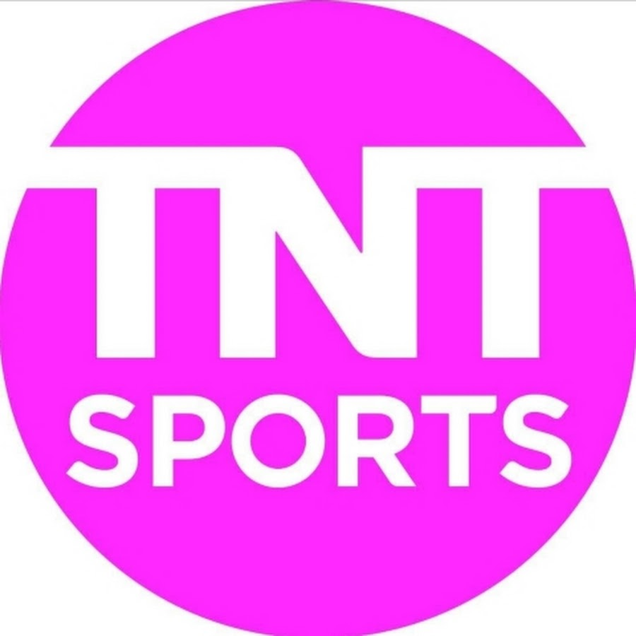

Sites esportivos
-
GE
-
ESPN
-
TNT SPORTS

O ge, também conhecido como GloboEsporte.com, é um portal de notícias de esporte brasileiro mantido pelo portal Globo.com, do Grupo Globo e sob orientação da Central Globo de Esportes, subsidiária da Direção Geral de Jornalismo e Esporte da TV Globo.

ESPN, sigla para Entertainment and Sports Programming Network, é uma família de canais de TV por assinatura dos Estados Unidos dedicada à transmissão e produção de programas esportivos 24 horas por dia.
TNT Sports é um bloco de programação televisivo brasileiro produzido pela Warner Bros. Discovery Americas, destinado a exibição de programas e transmissões esportivas. Sucedeu o Esporte Interativo, bloco televisivo criado em 2004 e que foi um canal próprio de 2007 a 2018.